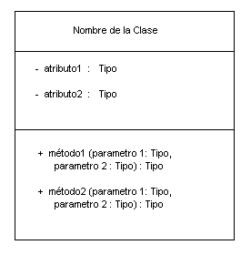
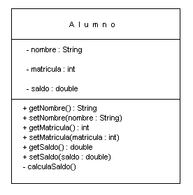

Módulo 5: Clases
y Objetos 
1. Modelación de Clases y Objetos
Cada vez que se analiza un problema a resolver utilizando la computadora y en este caso desarrollando una solución con una herramienta Orientada a Objetos, el análisis se debe hacer sobre los objetos involucrados en la solución y la interacción que entre ellos existe.
El diseño orientado a objetos nos ayuda a construir un modelo de objetos para un sistema que será desarrollado. Un modelo de objetos especifica las clases, sus atributos y métodos y sus relaciones con otras clases.
Por ejemplo al hablar de clientes, artículos, proveedores, inmediatamente debemos analizar cada uno por separado y la interacción que entre ellos existe y sobre todo la que tiene relación al problema en cuestión. Analizando primero las piezas aisladas y luego entrelazando sus relaciones.
Por ejemplo debemos tomar en cuenta primero las características que competen a los artículos y sobre estas las que competen al problema en cuestión o posibles problemas futuros que pudieran ser relacionados a los datos ahora analizados. Vienen a la mente sobre el artículo: el número, el nombre, el precio, la cantidad en inventario, el proveedor, etc. Asi mísmo nos debemos preocupar por las conductas que reportan estos artículos, sobre todo las que afectan a nuestro problema en cuestión, por ejemplo un artículo se da de alta en nuestro inventario, tambien se vende, puede ser que se regrese por el cliente, puede ser que se regrese por la empresa si es que esta en malas condiciones, etc.
De esta manera empezamos a definir las variables de instancia que contendrá cada uno de los objetos de todas las clases posibles que estamos analizando, y así de esa manera también empezamos a definir los métodos que hacen uso de esas variables de instancia y que reflejan la problemática analizada.
Una vez que tenemos las clases definida con sus características o atributos (variables) y sus conductas (métodos), entonces es que empezamos a desarrollar la aplicación que hará uso de estas clases. Esto puede ser a través de una aplicación no gráfica, una aplicación gráfica o un applet.
A continuación se presentan una serie de pasos necesarios para crear un modelo de objetos a partir de la especificación de un problema a resolver:
-
Identificar clases de objetos a partir de la especificación del problema (ver sustantivos y verbos). Una manera sencilla de hacer esto es empezar por identificar las clases al analizar la descripción textual en la especificación del problema. En este análisis textual, los sustantivos y las frases de sustantivos nos ayudan a entener con frecuencia los objetos y sus clases. Los sustantivos en singular ("cuenta", "carro" y "alumno") y los sustantivos en plural ("puntos", "carros" y "cuentas") indican clases. Los sustantivos propios ("la cuenta de Juan") y los sustantivos de referencia directa ("el individuo que tenia la cuenta") indican objetos.
-
Identificar relaciones entre clases. Aquí se sugiere que se cree una tabla n x n donde n es el número de clases. Se deben nombrar las filas y las columnas con los nombres de las clases y después se debe escribir en cada celda de intersección, una relación de asociación, donde se define una especialización, si es que la clase del renglón es aun más especializada que la clase de la columna, o se escribe una generalización si la clase de la columna es una especialización aun más específica que la clase del renglón (vease ejemplo), si hay alguna relación entre las clases se escribe esta relación.
-
Identificar los atributos de cada clase. Enumerar aqui aquellos datos propios de cada una de las clases mencionadas.
-
Identificar los métodos de cada clase. Aqui se deben de identificar las acciones que deben ser realizadas por los objetos de la clase ya sea acciones que no tengan relación con otras clases o acciones en donde involucren otras clases, y asi modificar métodos en ambas clases.
-
Modelar el problema utilizando UML(Unified Modeling Language). La modelación del problema se hace después de haber hecho estas asociaciones entre clases. El propósito de este curso no es que definas la modelación de las clases que representan a un problema planteado, pero es importante que destaques las relaciones entre clases para que estes preparado posteriormente en algún curso adicional sobre modelación de objetos.
A continuación presentamos una manera en la que se pudieran establecer una relación específica de un enunciado de "un cliente es una persona que tiene una o más cuentas".
PersonaClienteCuentaPersonaClienteCuenta
Cuando trabajamos con un problema específico, en relación a este curso, se debe trabajar con los puntos 1, 3 y 4, para poder entonces crear las clases en Java, como hemos visto anteriormente. Después escribimos la aplicación que utilice estas clases.
Definición de una Clase
La definición de una clase se entiende mejor al utilizar el diagrama de clase, que es la notación que se usa en UML. Así como se muestra abajo, una clase está representada por un rectángulo con tres secciones. La primera sección es donde se define el nombre de la clase; la segunda sección describe los atributos de la clase y la tercera sección es para los métodos de la clase.

Esto nos ayuda a entender visualmente la manera en la que una clase esta compuesta.
El tipo de una variable y el tipo de retorno de un método están especificados por dos puntos ( : ) seguidos por el nombre de un tipo. La especificación de un atributo o método comienza con un símbolo que indica la vista de dicho atributo o método:
-
- indica vista privada
-
+ indica vista pública
La vista privada no permite que otras clases tengan acceso a este atributo o método, mientras que la vista pública permite que otras clases tengan acceso a este atributo o método.
Normalmente, como lo hemos mencionado, los atributos se deben definir como privados, de esta manera se maneja el concepto llamado como encapsulamiento, en el que el objeto mantiene el control de la información que maneja. Los métodos se definen comunmente como públicos, para que cualquiera pueda hacer uso de ellos, a menos que sean métodos privados definidos para algún cálculo que será propio de la clase donde se definen.
Los atributos privados son entonces utilizados (accedidos o modificados) a través de métodos públicos, el método que sirve para tomar algun valor de un atributo privado es llamado de acceso (accesor) y el que sirve para modificar un valor del atributo privado es llamado modificador (mutator).
A continuación mostramos la representación de UML para la clase Alumno, en la que tenemos tres atributos privados: matricula, nombre y saldo. Y los métodos públicos: método de acceso para matricula, nombre y saldo, métodos modificadores para matrícula, nombre y saldo. Definimos también un método privado para hacer el cálculo del saldo, y es privado porque no requerimos usarlo fuera de la clase.

Clases de Envoltura (Wrapper Classes)
Existen una serie de clases llamadas clases de envoltura o wrapper classes, que son las clases que utiliza Java para manejar los datos primitivos, pero a través de objetos, es decir, en la mayoria de las clases de Java se tienen métodos que utilizan objetos, son pocos los métodos o métodos constructores que toman como parámetros los datos primitivos (int, float, double, char, etc). Es por esto que en Java se han definido estas clases de envoltura.
Existe una clase de envoltura para cada diferente tipo de dato primitivo, dentro de ellas se tienen una serie de constructores utilizados para crear objetos de la clase a partir de diferentes valores primitivos.
Hasta ahora hemos utilizado mucho el método parseInt y el método parseDouble de las clases Integer y Double correspondientemente, es importante que analices los constructores que se tienen en cada una de estas clases, así como de las demas clases de envoltura para que puedas utilzarlas eficientemente de acuerdo a tus necesidades.
Es importante que las consultes estas clases son:
| Tipo de Dato Primitivo
|
Clase de Envoltura (Wrapper Class)
Correspondiente
|
|
|
|
|
|
|
|
|
|
|
|
|
|
|
|
|
1. Escribe el diagrama de Clases para una aplicación que requiere resolver el problema de administrar la renta y venta de películas en un Video Club, el cual tiene titulos nacionales y extranjeros, manejando peliculas de VideoMax, MexiVideo, UltraVideo y otros. Los clientes pueden rentar hasta 10 películas teniendo diferentes dias de vencimiento para cada una de ellas.
2. Escribe el diagrama de Clases para una aplicación que requiere resolver el problema de administrar la renta de cuartos en un Hotel. Los clientes pueden tener acceso al frigo bar del cuarto y pueden tener gastos por concepto de piscina, restaurant, servicio a cuarto y Spa.